Wisata Lembang
Patongloan
Lembang di dataran tinggi Bittuang, tempat air terjun Sarambu Assing dan permukiman leluhur Leppangan masih menjaga jejak Toraja yang belum banyak dijamah.
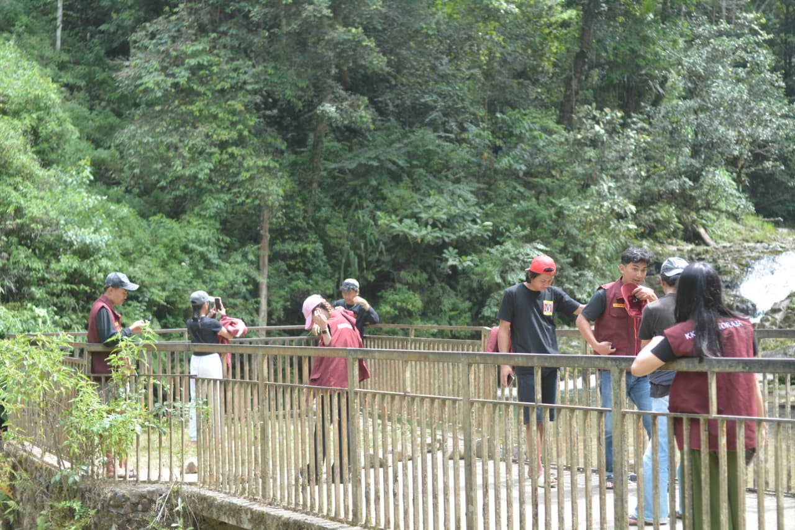
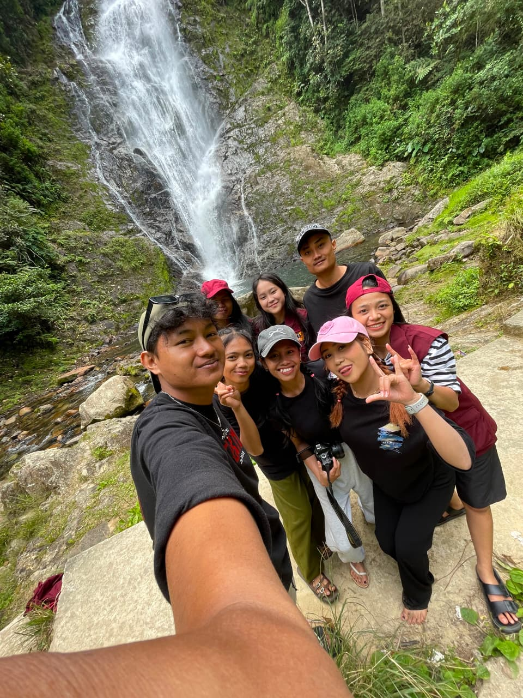
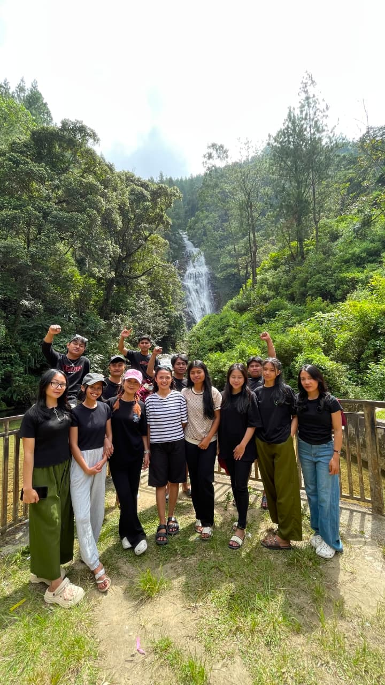
Tentang Patongloan
Patongloan adalah salah satu dari 14 lembang di Kecamatan Bittuang, dilalui jalan poros Bittuang–Masanda. Wilayahnya berbukit dan bergunung, khas dataran tinggi Tana Toraja, dengan mata pencaharian warga yang sebagian besar bertumpu pada sektor pertanian.
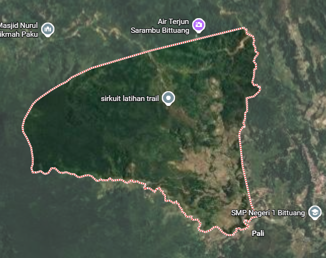
Lembang PatongloanDestinasi Wisata
Salah satu daya tarik utama Patongloan: keindahan alam air terjun Sarambu Assing.
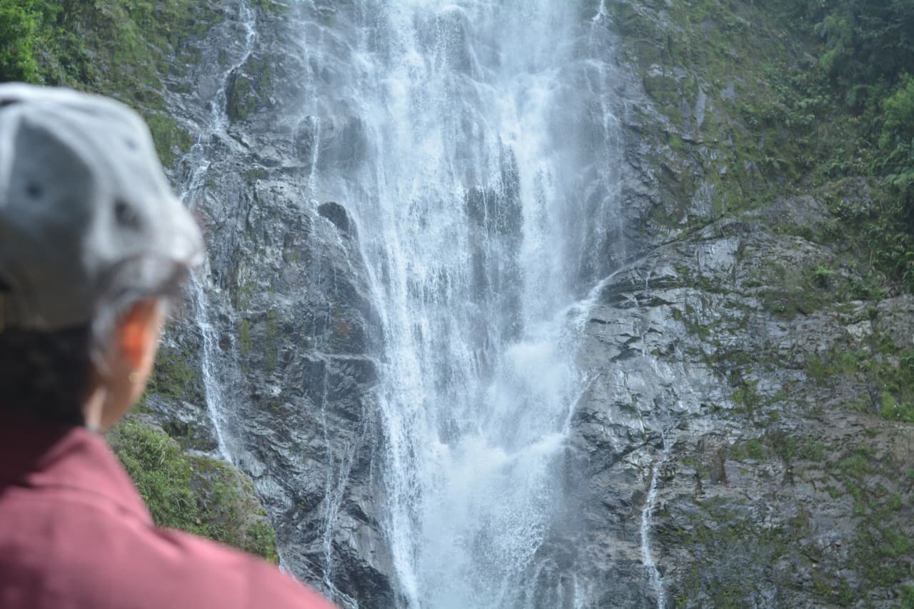
Sarambu Assing
Air terjun yang menjadi rintisan desa wisata Patongloan, terdaftar di Jejaring Desa Wisata (Jadesta) Kementerian Pariwisata. Cocok untuk trekking ringan dan menikmati suasana pegunungan yang masih asri.
Cara ke Lokasi
- Dari Makale/Rantepao
Menuju arah Kecamatan Bittuang, lalu ikuti jalan poros Bittuang–Masanda menuju Lembang Patongloan. Estimasi waktu dari Makale 60-90 Menit - Kondisi jalan
Jalan menuju ke lokasi wisata merupakan jalan cor dan masih bisa dilalui dengan kendaraan. Disarankan menggunakan kendaraan yang sesuai medan pegunungan, terutama saat musim hujan. - Titik kumpul
Kantor Kecamatan Bittuang atau Lapangan Ulusalu menjadi acuan awal sebelum menuju destinasi wisata.
Catatan: titik peta saat ini berdasarkan nama lokasi. Setelah tiba di lokasi, jatuhkan pin di Google Maps lalu ganti tautan di atas dengan koordinat GPS asli agar lebih akurat.
Produk Lokal
Kopi Toraja
Hasil perkebunan kopi warga lokal, diolah secara tradisional.
Pertanian
Hasil tani khas Patongloan lainnya akan ditampilkan di sini. (daftar produk menyusul)
Galeri
Klik foto untuk memperbesar.
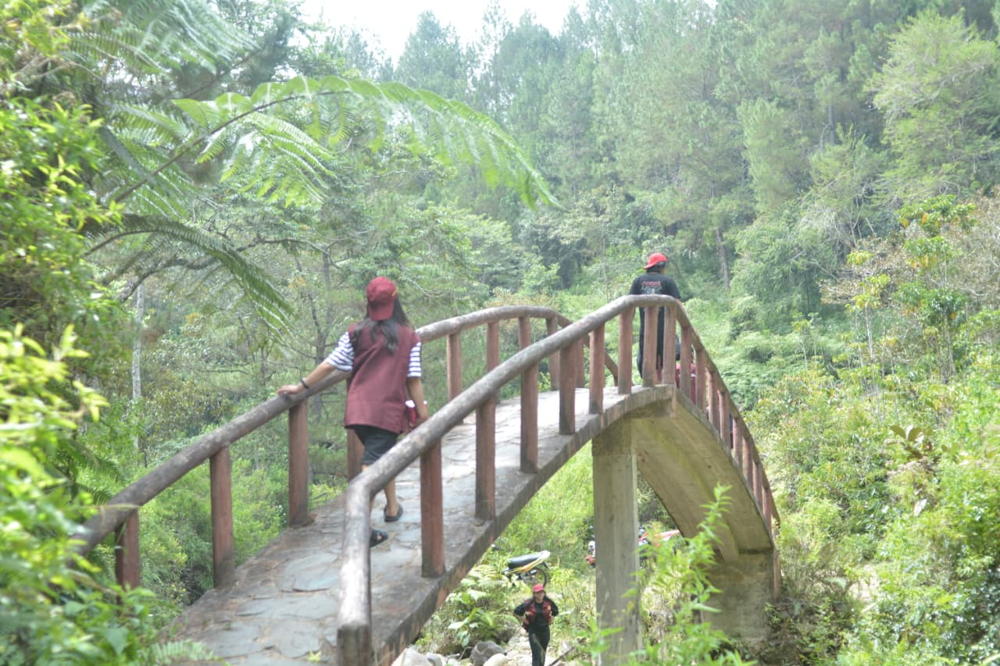
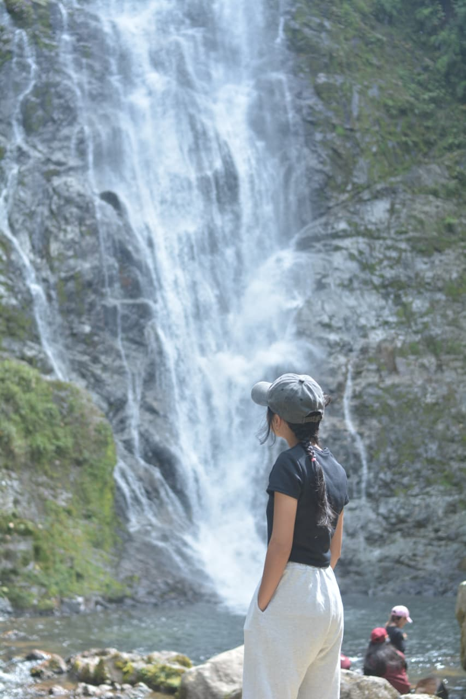
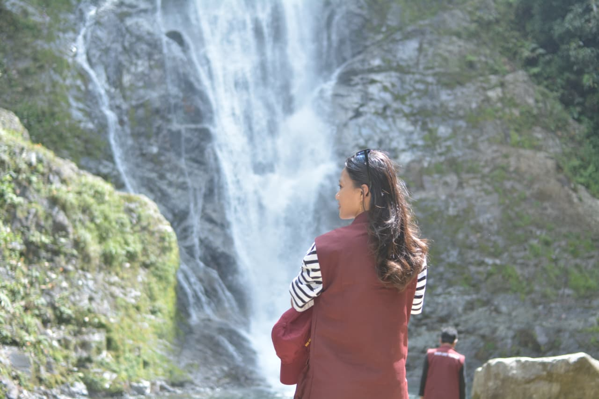
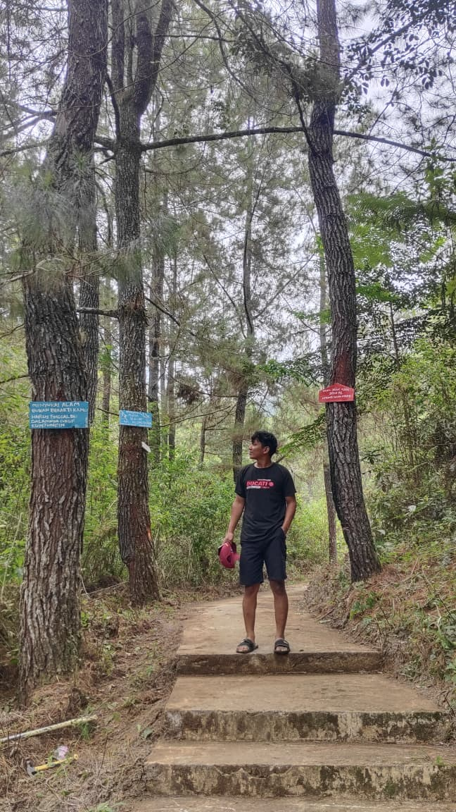
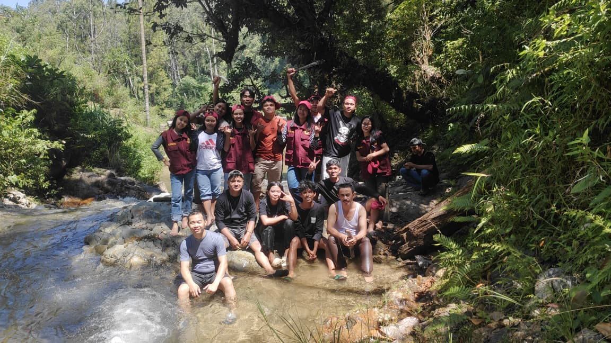
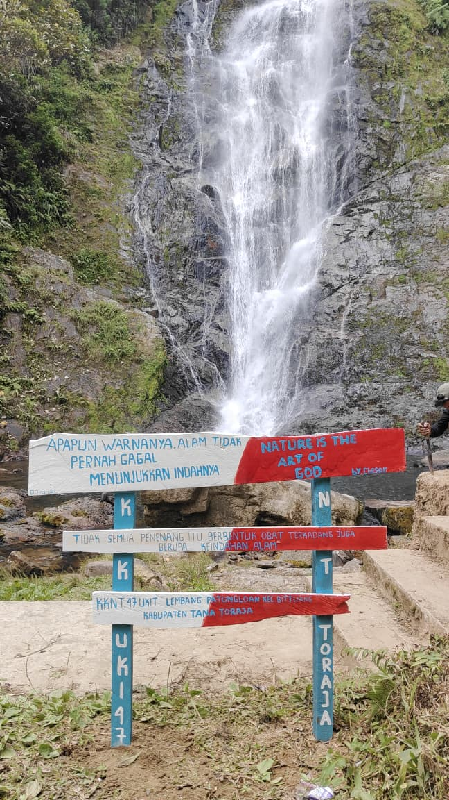
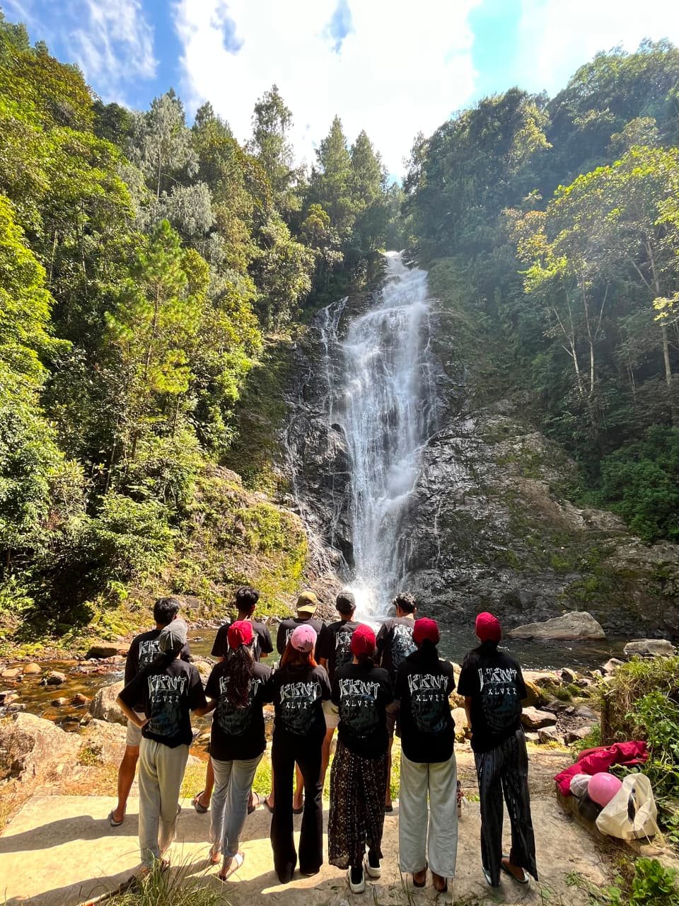
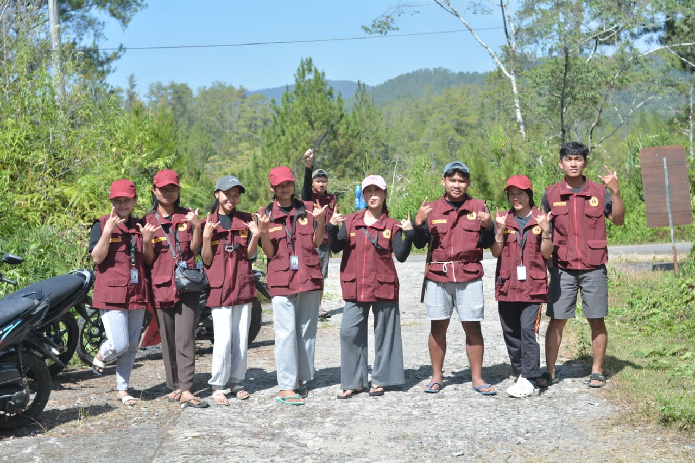
Fakta atau Mitos?
Beberapa hal yang beredar seputar Patongloan dan budaya Toraja — sebagian fakta yang bisa diverifikasi, sebagian mitos/cerita rakyat yang diwariskan turun-temurun. Klik untuk membaca selengkapnya.
Soon
Sentuh untuk baca ↻Soon
Asal-usul Nama Sarambu Assing
Sentuh untuk baca ↻Nama Sarambu Assing berasal dari ....
Soon
Sentuh untuk baca ↻Soon
Soon
Sentuh untuk baca ↻Soon
Video Sarambu Assing & Patongloan
Video dokumentasi oleh Kelompok KKN — perjalanan menuju lokasi dan suasana Lembang Patongloan.
Rencanakan Kunjunganmu
Hubungi pengelola desa wisata Patongloan untuk informasi lebih lanjut sebelum berkunjung.